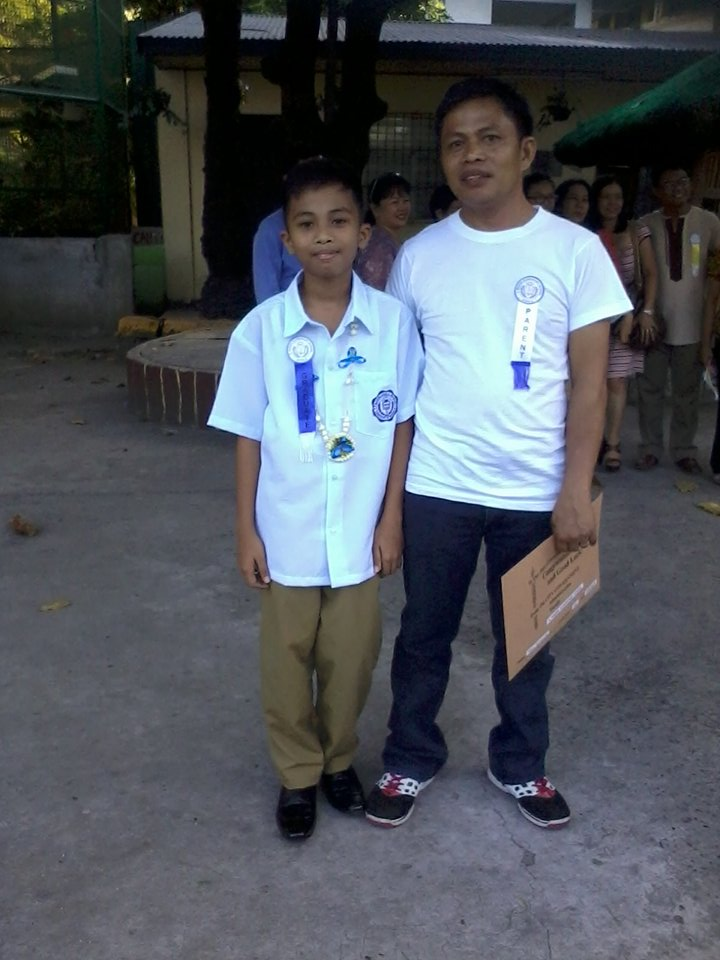

When I was a kid, there’s a lot of things that I got interested on.1 I was less than 5 years old, I remember joining onto my siblings doing their homework.2 At that age, I already learned how to write in cursive.3 I would say that I got a wonderful childhood, since I spend a lot of my times doing what I love.4 I am an average student in my elementary years, I didn’t study hard because I like to play outdoor games, basketball, and video games (the one that is rentable), and I also like to draw.5 Even though, I didn’t focus on studying I always on the top five students in the class from grade one to six.6 I also became a top one student when I was in third grade because my uncle promised me that he would buy me a PSP when I become a top student.7 But it didn’t happen because PSP is so expensive that time.8
All those years, I only study for quarterly examination, and I always got high scores, especially in math.9 I really love math, I like solving mathematical problems, puzzles, etc.10 That’s why my first dream was to be a civil engineer someday.11 During my last year in elementary, my mother decided to go abroad to provide our financial needs since my sister is going to college.12 At that time, I don’t fully understand the situation. I’m sad but at the same time, I’m also happy because as a kid I thought that I would get what I want since my mother is an OFW.13 After I graduated elementary, I enrolled to high school and took an exam for a special science section and got accepted.14
During my first year in high school, I kind of neglected studying since being a special science student is hard.15 I’m only 12 years old that time and my scheduled was 7 am to 5 pm.16 There are only 2 subjects that I’m interested in, first is math, and second is a computer subject which is about designing text, and html.17 The next year, html, photoshop, and video editing became our subject.18 At that time, I don’t fully understand html, that’s why I struggled on that subject but I enjoy coding, editing photos, and I like the computer laboratory environment.19 Since then, I considered becoming professional on computer related jobs as my dream.20